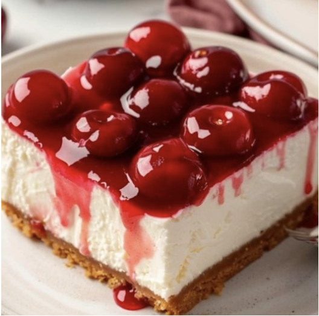

HEAVENLY PASTERIES
HOME
RECIPES
ABOUT
SUBMIT
Search
CHERRY DELIGHT

INGREDIENTS
7 tablespoons unsalted butter
1 1/2 cups graham cracker crumbs (about 9 whole crackers)
3 tablespoons granulated sugar
8 ounces cream cheese, softened
1 cup powdered sugar
1 teaspoon pure vanilla extract
1 container cool whip, 8 ounces
1 can cherry pie filling, 21 ounces
INSTRUCTIONS
Add the butter to a medium bowl. Microwave for 30 seconds or until melted. Add the graham cracker crumbs and sugar and mix well to combine. Pat the crumb mixture firmly into the bottom of a sprayed 8 x 8 baking dish. Set aside.
Add the cream cheese to a large bowl. Mix with a mixer until the cream cheese of smooth and free of any lumps. Add the powdered sugar and vanilla and mix well. Add the cool whip and mix until the cool whip and cream cheese are combined, but don’t overmix.
Spread the filling evenly over the graham cracker crust, using a spoon or offset spatula. Spoon the cherry pie filling over the top and carefully spread it evenly over the filling.
Refrigerate for at least 2 hours before serving. Leave it overnight.
Refrigerate leftovers.
 HEAVENLY PASTERIES
HEAVENLY PASTERIES